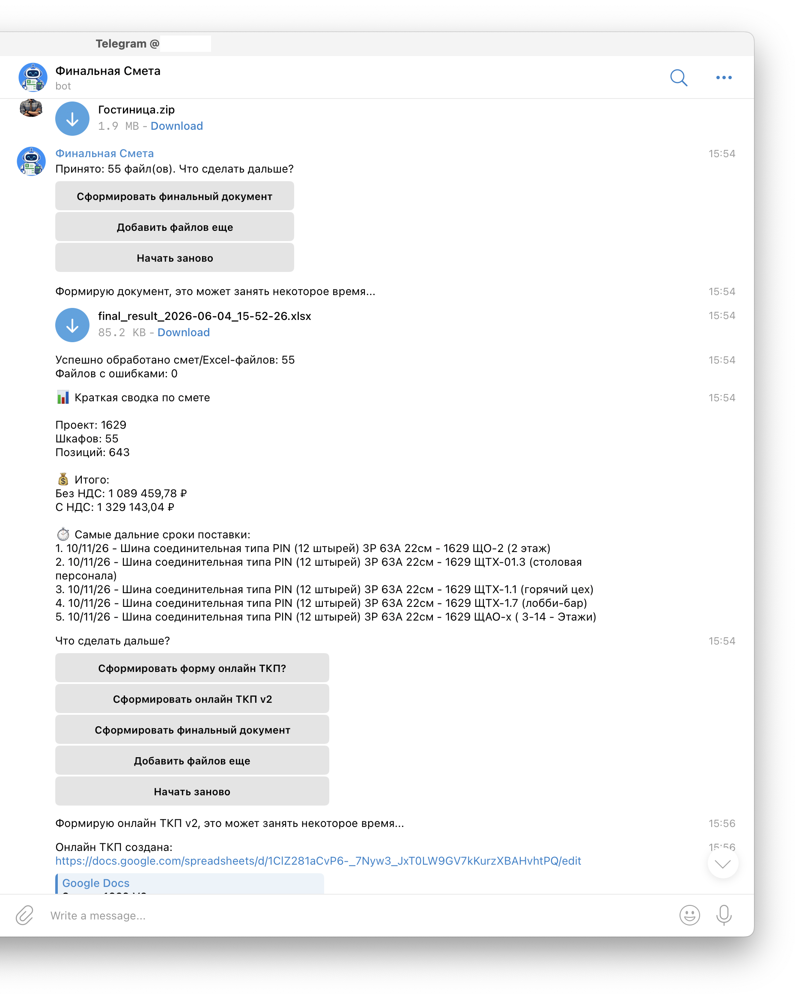
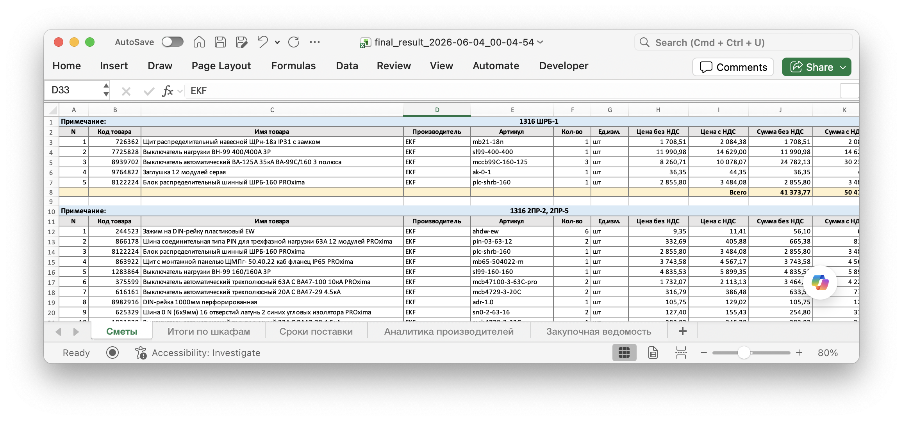
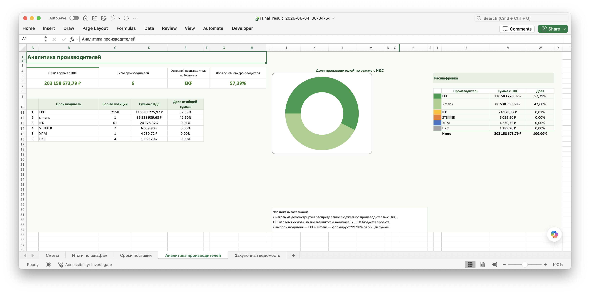
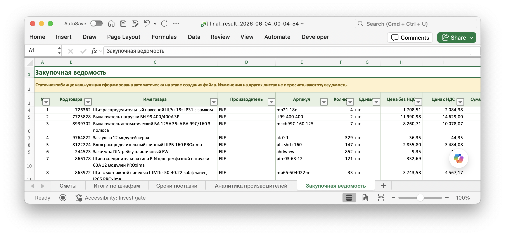

EMPR Automation Wiki
Короткая база знаний по рабочим инструментам: Telegram-боту для смет, онлайн-ТКП, финальному Excel, паспортам НКУ, реестру и файлам для скачивания.
Разделы
-
@EMPR_smetaBot
Работа со сметами через Telegram: загрузка Excel/ZIP, получение final_result, пересчёт готового файла и создание онлайн-ТКП.
-
Генерация паспортов НКУ
Создание DOCX-паспортов по шаблону из Google Таблицы или локального Excel.
-
Заполнение реестра НКУ
Интерактивное добавление строк в реестр с формированием типа изделия, номеров и параметров.
-
Файлы для скачивания
Скрипты, шаблоны, инструкции, bat/command-файлы запуска и рабочие документы.
-
Промты для доработок
Готовый контекст проекта для ChatGPT/Codex и правила безопасной разработки.
Функционал @EMPR_smetaBot
- Принимает .xls, .xlsx, .xlsm и ZIP-архивы со сметами.
- Формирует final_result_YYYY-MM-DD_HH-MM-SS.xlsx.
- Распознаёт уже готовый final_result по структуре книги, а не только по имени файла.
- Предлагает пересчитать финальную смету после ручных правок на листе Сметы.
- Создаёт онлайн-ТКП в Google Sheets из нового, пересчитанного или повторно загруженного final_result.
- Если тестовый режим включён администратором, показывает отдельную кнопку онлайн-ТКП v2.

Листы final_result
- Сметы
-
Основной лист с блоками шкафов, товарными строками, ценами, сроками и итогами.

Пример листа Сметы в готовом final_result. - Итоги по шкафам
- Сводка по стоимости шкафов. Формулы ссылаются на актуальные строки листа Сметы.
- Сроки поставки
- Самые дальние сроки и позиции без корректного срока поставки.
- Аналитика производителей
-
Сводка по производителям, суммам и долям.

Пример листа Аналитика производителей с диаграммой и расшифровкой. - Закупочная ведомость
-
Статичная закупочная таблица. Одинаковые позиции объединяются, количество суммируется, срок берётся самый дальний.

Пример листа Закупочная ведомость с агрегированными позициями.